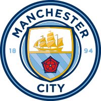
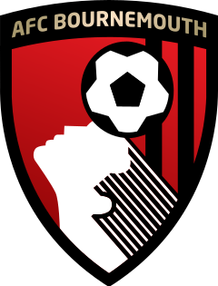
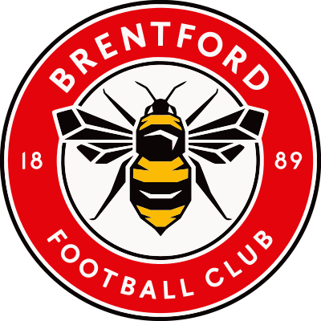
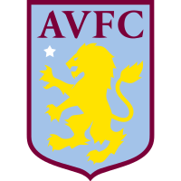
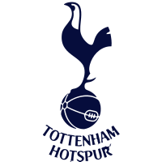
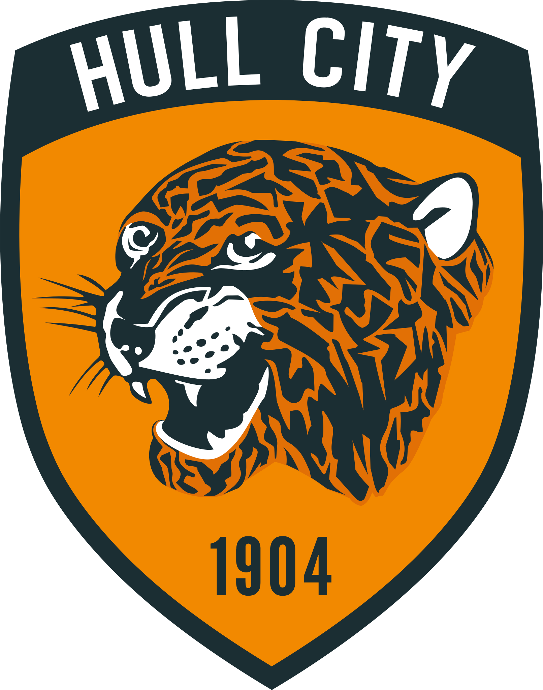
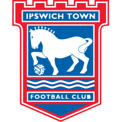
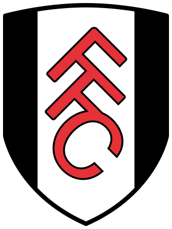

الدوري الإسباني
الدوري الإسباني الدوري الإيطالي
الدوري الإيطالي الدوري الألماني
الدوري الألماني الدوري الفرنسي
الدوري الفرنسي البطولة المغربية
البطولة المغربية الدوري الإنجليزي الممتاز — موسم 2026-27 • الجولة 10
الدوري الإنجليزي الممتاز — موسم 2026-27 • الجولة 10
✓ موثق المصدر: thestatsapi.com (18 نونبر 2026، 22:41 UTC) + مطابقة مع nbcsports.com وrenderfoot.com — الهدافون: renderfoot.com (18 نونبر 2026) + مطابقة مع nbcsports.com وradiotimes.com — آخر تحقق: 18 نونبر 2026. الجدول الكامل موثق.
جدول الترتيب
الجولة 11 — 21–23 نونبر 2026| # | الفريق | لعب | فاز | تعادل | خسر | فرق | نقاط |
|---|---|---|---|---|---|---|---|
| 1 |  آرسنال آرسنال | 10 | 9 | 0 | 1 | +10 | 27 |
| 2 |  برايتون برايتون | 10 | 7 | 1 | 2 | +19 | 22 |
| 3 |  مانشستر سيتي | 10 | 7 | 0 | 3 | +8 | 21 |
| 4 |  ليفربول ليفربول | 10 | 5 | 3 | 2 | +4 | 18 |
| 5 |  تشيلسي تشيلسي | 10 | 5 | 1 | 4 | +3 | 16 |
| 6 |  إيفرتون إيفرتون | 10 | 4 | 4 | 2 | +2 | 16 |
| 7 |  بورنموث | 10 | 4 | 3 | 3 | +2 | 15 |
| 8 |  برينتفورد | 10 | 3 | 5 | 2 | +5 | 14 |
| 9 |  ليدز يونايتد ليدز يونايتد | 10 | 3 | 5 | 2 | +2 | 14 |
| 10 |  أستون فيلا | 10 | 3 | 4 | 3 | -3 | 13 |
| 11 |  توتنهام | 10 | 3 | 3 | 4 | -1 | 12 |
| 12 |  نيوكاسل يونايتد نيوكاسل يونايتد | 10 | 3 | 3 | 4 | -3 | 12 |
| 13 |  هال سيتي | 10 | 2 | 5 | 3 | 0 | 11 |
| 14 |  إيبسويتش تاون | 10 | 3 | 2 | 5 | -5 | 11 |
| 15 |  فولهام | 10 | 2 | 4 | 4 | -2 | 10 |
| 16 |  نوتينغهام فورست نوتينغهام فورست | 10 | 2 | 3 | 5 | -4 | 9 |
| 17 |  كوفنتري سيتي كوفنتري سيتي | 10 | 3 | 0 | 7 | -9 | 9 |
| 18 |  مانشستر يونايتد مانشستر يونايتد | 10 | 1 | 5 | 4 | -5 | 8 |
| 19 |  سندرلاند سندرلاند | 10 | 2 | 2 | 6 | -9 | 8 |
| 20 |  كريستال بالاس كريستال بالاس | 10 | 2 | 1 | 7 | -14 | 7 |
هدّافو الدوري
1إيرلينغ هالاندمانشستر سيتي9
2ألكسندر إيزاكليفربول7
ليفربول73تيرنو باريإيفرتون6
إيفرتون64نيكولاس جاكسونأستون فيلا6
5إيفانيلسونبورنموث5
6جواو بيدروتشيلسي5
تشيلسي57ريان شرقيمانشستر سيتي5
8مورغان روجرزتشيلسي5
تشيلسي59ماركوس تافيرنييهبورنموث5
10بريان مبيومومانشستر يونايتد4
مانشستر يونايتد4مباريات ونتائج
كل المباريات ←الدوري الإنجليزيمانشستر سيتي13:30فولهام2026-11-21 13:30
الدوري الإنجليزيأستون فيلا16:00سندرلاند2026-11-21 16:00
سندرلاند2026-11-21 16:00الدوري الإنجليزيبورنموث16:00نوتينغهام فورست2026-11-21 16:00
نوتينغهام فورست2026-11-21 16:00الدوري الإنجليزيكوفنتري سيتي16:00كريستال بالاس2026-11-21 16:00
كوفنتري سيتي16:00كريستال بالاس2026-11-21 16:00الدوري الإنجليزيتوتنهام16:00إيبسويتش تاون2026-11-21 16:00
الدوري الإنجليزينيوكاسل يونايتد18:30آرسنال2026-11-21 18:30
نيوكاسل يونايتد18:30آرسنال2026-11-21 18:30الدوري الإنجليزيهال سيتي15:00برايتون2026-11-22 15:00
برايتون2026-11-22 15:00الدوري الإنجليزيليفربول18:30مانشستر يونايتد2026-11-22 18:30
ليفربول18:30مانشستر يونايتد2026-11-22 18:30الدوري الإنجليزيبرينتفورد21:00إيفرتون2026-11-23 21:00
إيفرتون2026-11-23 21:00مساحة إعلانية — CPA (Placeholder)تُضاف هنا عروض موثوقة بعد اختيارها — بدون نوافذ منبثقة وبدون روابط مراهنات.لا يوجد أي عرض حي أو رابط خارجي في هذه المساحة حالياً.